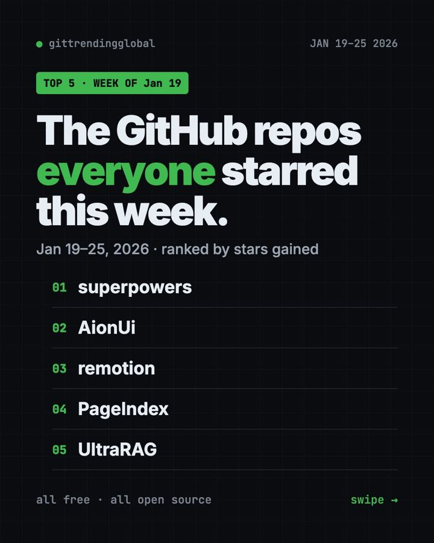
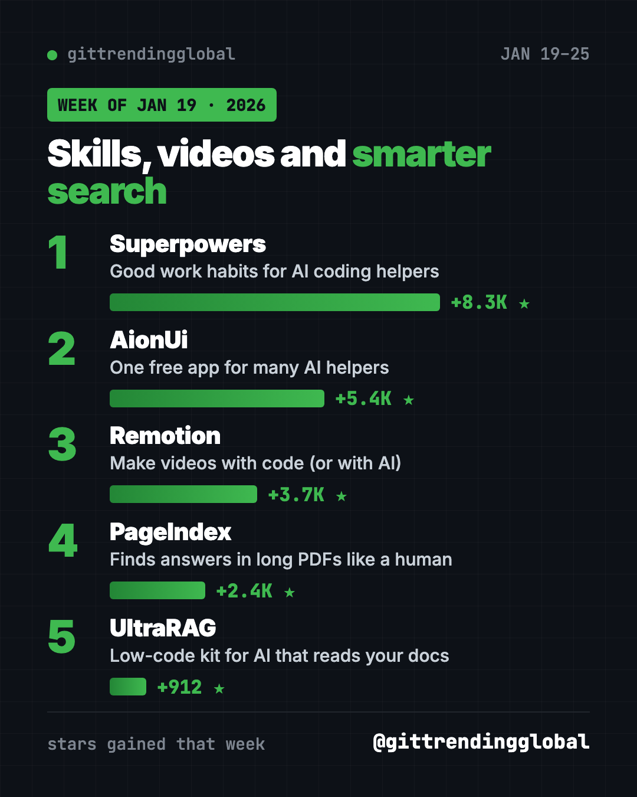
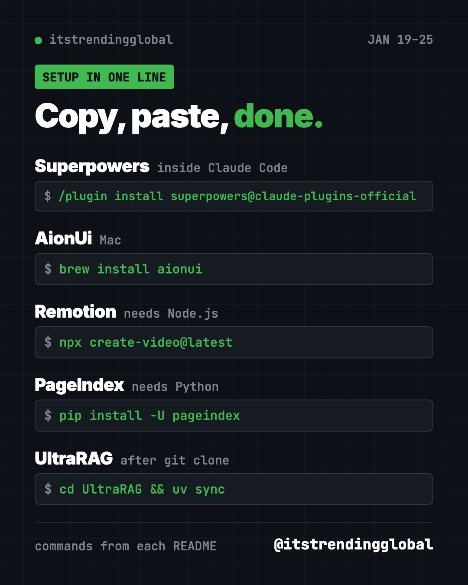

Home › Top repos › GitHub trending this week
Most Starred GitHub Repos: Week of January 19, 2026
Most starred GitHub repos week of January 19, 2026: Superpowers, AionUi, Remotion, PageIndex and UltraRAG, with plain-English setup steps.

Which free tools did people bookmark most in late January? The most starred GitHub repos week of January 19, 2026 were Superpowers, AionUi, Remotion, PageIndex and UltraRAG.
That is a fun mix. One teaches AI helpers good habits, one puts many AI helpers in a single app, one makes videos, and two help AI read long documents. Here is each one in plain words, with the line to paste.
Key takeaways
- Superpowers took first place with about 8,300 new stars.
- AionUi is a free desktop app that can run many AI helpers side by side.
- Remotion lets you make videos with code, or ask an AI helper to make them.
- PageIndex finds answers in long PDFs by reading them like a table of contents.
- UltraRAG is a low-code kit for building AI that answers from your own documents.
Most starred GitHub repos week of January 19, 2026: quick comparison
| Rank | Repo | Stars gained | Best for | License |
|---|---|---|---|---|
| 1 | Superpowers | +8.3K | Better results from AI coding helpers | MIT |
| 2 | AionUi | +5.4K | Office tasks with AI agents | Apache-2.0 |
| 3 | Remotion | +3.7K | Making videos from code | Free for people and tiny teams |
| 4 | PageIndex | +2.4K | Questions about long reports | MIT |
| 5 | UltraRAG | +912 | Researchers building document AI | Apache-2.0 |
Gains are for January 19 to 25, 2026. Totals were checked on GitHub on October 16, 2026.
1. Superpowers: a third week in the top five
Stars: +8.3K this week · about 300K total today
What it is: Superpowers is a free skill pack for AI coding helpers. Skills are instruction sets that switch on by themselves when they fit the job. With Superpowers, your helper stops, asks what you want, and gets your OK on a plan before building.
Who it's for: Claude Code, Codex, Cursor and Gemini CLI users.
One everyday use: Planning a small tool, like a shared family shopping list.
Install it: Type this inside Claude Code:
/plugin install superpowers@claude-plugins-official
Gemini CLI users can paste gemini extensions install https://github.com/obra/superpowers instead.
With Superpowers, help me plan a shared shopping list app for my family. Ask before you build.
See Superpowers on GitHub · Read our full Superpowers guide

2. AionUi: one app, many AI helpers
Stars: +5.4K this week · about 34K total today
What it is: AionUi is a free desktop app for Mac, Windows and Linux. It comes with its own built-in AI agent, so you only paste an API key (a password-like code for an AI service) to start. It also finds helpers you already have, like Claude Code or Codex. It ships with ready-made assistants for PowerPoint, Word and Excel files.
Who it's for: Office workers who want AI to make slides, documents and spreadsheets on their computer.
One everyday use: Ask the PPT assistant to turn your meeting notes into an editable slide deck.
Install it: Download it from the AionUi releases page, or on a Mac copy and paste this:
brew install aionui
Install AionUi from https://github.com/iOfficeAI/AionUi and help me make a 5-slide deck from my notes file.
3. Remotion: make videos with code
Stars: +3.7K this week · about 64K total today
What it is: Remotion builds videos from React code, a popular way to build web pages. Because a video is just code, an AI helper can write it for you. Its README lists three ways in: with your AI helper, with drag and drop, or by writing code.
Who it's for: Creators who make many similar videos, like weekly stats clips or captions.
One everyday use: Make a 10-second animated intro with your channel name.
Install it: You need Node.js, a free program from nodejs.org. Then copy and paste this:
npx create-video@latest
Create a new Remotion project with npx create-video@latest and make a 10-second intro that says "Welcome to my channel".
💡 Tip: Remotion is free for individuals, non-profits and companies with up to 3 employees. Bigger companies need a paid company license.

4. PageIndex: find answers in long documents
Stars: +2.4K this week · about 39K total today
What it is: Most AI document search chops files into small pieces and matches similar words. PageIndex works differently. It builds a tree, like a table of contents, and the AI reasons its way to the right section. The README says it is made for financial reports, legal papers, manuals and textbooks.
Who it's for: Anyone who asks questions about long PDFs, like annual reports or contracts.
One everyday use: Ask "What was the operating margin in 2023?" about a company report.
Install it: You need Python and your own AI key. Copy and paste this:
pip install -U pageindex
Install PageIndex, index the PDF in this folder, and answer my questions with the section each answer came from.
5. UltraRAG: a kit for document AI
Stars: +912 this week · about 5.7K total today
What it is: UltraRAG is a low-code framework from Tsinghua University's THUNLP lab, OpenBMB and partners. "RAG" means AI that looks things up in your documents before it answers. You describe the steps in a simple settings file, and UltraRAG UI shows them as a visual flow. Version 3.0 came out on January 23, 2026.
Who it's for: Students and researchers testing document AI ideas.
One everyday use: Build a chatbot that answers only from your class notes.
Install it: You need uv, a Python installer. Copy and paste this:
git clone https://github.com/OpenBMB/UltraRAG.git --depth 1
cd UltraRAG
uv sync
Set up UltraRAG from https://github.com/OpenBMB/UltraRAG with the core install and open UltraRAG UI for me.
Which one should you try first?
- You make slides and documents all day: try AionUi.
- You make videos: try Remotion with an AI helper.
- You read long reports: try PageIndex.
- You already code with AI: add Superpowers.
- You are a student or researcher: explore UltraRAG.
FAQ
What were the most starred GitHub repos in the week of January 19, 2026?
Superpowers, AionUi, Remotion, PageIndex and UltraRAG gained the most stars from January 19 to 25, 2026.
Is AionUi free?
Yes. AionUi is free and open source. The AI service you connect with your API key may charge you.
Can I use Remotion without coding?
Mostly, yes. You can ask an AI helper like Claude Code to write the video for you. You still need Node.js installed.
How is PageIndex different from normal AI search?
It skips the usual chopped-up pieces and searches a tree like a table of contents. That lets it show which section each answer came from.
See the best GitHub repos of January 2026 and January 2026 in AI. Read the week before, January 12, or the week after, January 26.
Want a new free tool explained every day? Follow @gittrendingglobal on Instagram.
📲 See this as a swipeable post on Instagram
Keep reading

Trending GitHub Repos October 2026: The Top 5 So Far
The trending GitHub repos of October 2026 so far: a free Photoshop-style editor, an AI art studio, a big AI model for gaming PCs and more, explained.

Trending GitHub Repos This Week, Oct 5 2026: The Top 5
Trending GitHub repos this week Oct 5 2026: Matt Pocock's skills, the openGym workout tracker, e2e testing, HyperFrames video and claude-mem memory.

GitHub Trending September 28, 2026: VoiceStudio Takes #1
GitHub trending September 28 2026: VoiceStudio, Hindsight, Paperclip, NVIDIA's OpenShell and a free 542-lesson AI course, with setup steps for each.